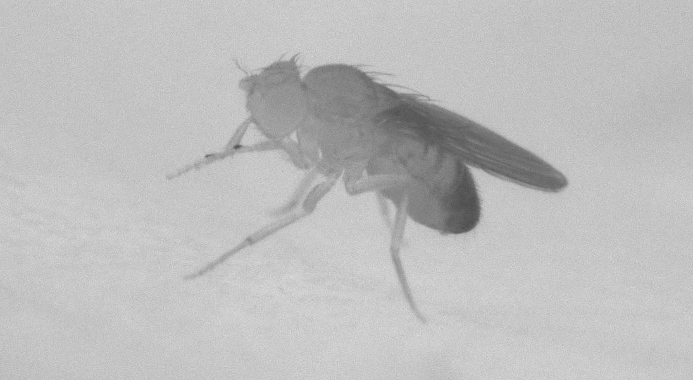

Jizheng Dong
I am Jizheng Dong, a graduate from Nanjing University with a major in applied mathematics and currently a research assistant in the system neuroscience lab of Professor Yi Sun at Westlake University. My research interests include the analysis and modeling of animal behavior and neural activity.
News
Recent Projects
The project aims for the development of equipment for adaptive recording and analysis of 3D behavior in the free-behaving fruit fly.
A fruit fly displays special standing
How to improve the resolution for behavior recording is an important problem in systems neuroscience. To address this question, we plan to build equipment to track the free-behaving animals. This could be used for behavioral analysis and optical stimulation in brain areas.
Compared to the head-injured or restricted state under which many behavior experiments are performed, fruit fly display lots of behaviors that are not even observed when they are head-fixed, such as special standing and rolling. The existing results have shown that our equipment is valuable.
Past Projects

Project Page | Hardware Implementation
I would like to say, AdderNet is very cool! The initial idea was came up in about 2017 when climbing with some friends at Beijing. By replacing all convolutional layers (except the first and the last layers), we now can obtain comparable performance on ResNet architectures. In addition, to make the story more complete, we recent release the hardware implementation and some quantization methods. The results are quite encouraging, we can reduce both the energy consumption and thecircuit areas significantly without affecting the performance. Now, we are working on more applications to reduce the costs of launching AI algorithms such as low-level vision, detection, and NLP tasks.

Huawei Connect (HC) 2020 | MindSpore Hub
The initial verison of GhostNet was accepted by CVPR 2020, which achieved SOTA performance on ImageNet: 75.7% top1 acc with only 226M FLOPS. In the current version, we release a series computer vision models (e.g. int8 quantization, detection, and larger networks) on MindsSpore 1.0 and Mate 30 Pro (Kirin 990).
Huawei Developer Conference (HDC) 2020 | Online Demo
This project aims to develop a video style transfer system on the Huawei Atlas 200 DK AI developer Kit. The latency of the original model for processing one image is about 630ms. After accelerating it using our method, the lantency now is about 40ms.
Research
I'm interested in devleoping efficient models for computer vision (e.g. classification, detection, and super-resolution) using pruning, quantization, distilaltion, NAS, etc.
Presentation:
- Gesture analysis during social interactions in Drosophila
Jing Ning, Jizheng Dong, Xingjiang Zhang, Zhou Li, Junlong Wang, Dandan Chen, Qiong Liu, Yi Sun
CSHL Neurobiology of Drosophila 2021 | poster